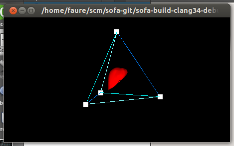

| SimpleGUI helps inserting a Sofa simulation in graphics applications, such as this simple Glut program. |
|  |
| Authors |
Francois Faure |
| Contact |
Francois.Faure@inria.fr |
| License |
This plugin is distributed under the same license as the core of SOFA. |
| Patents |
|
| APP registration |
|
| Sponsors |
|